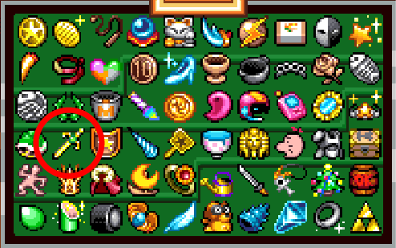
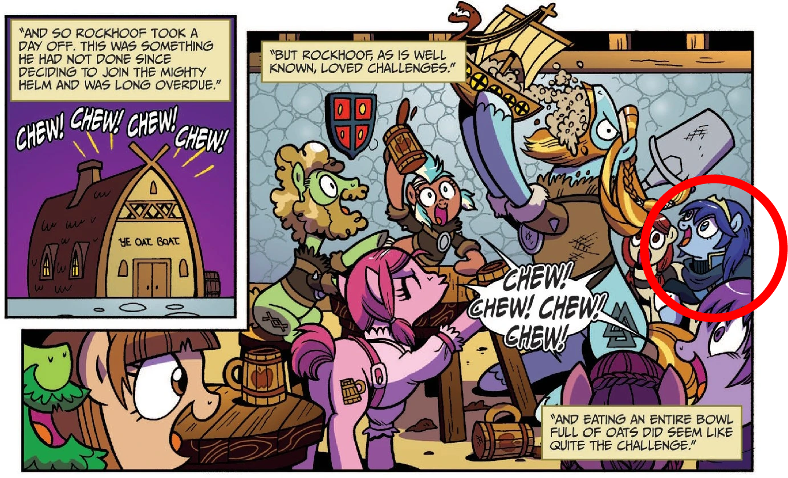
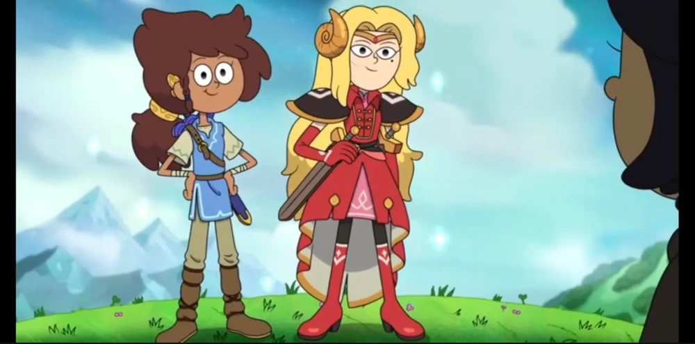
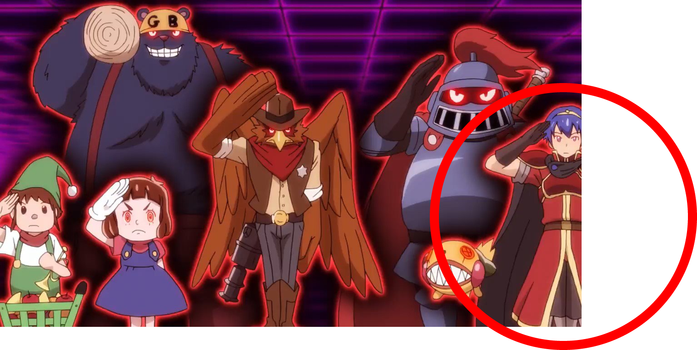
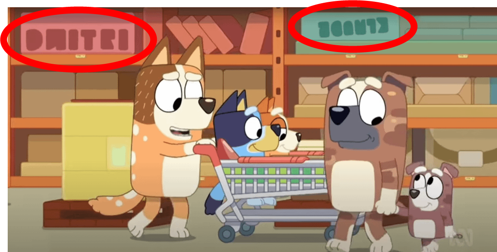
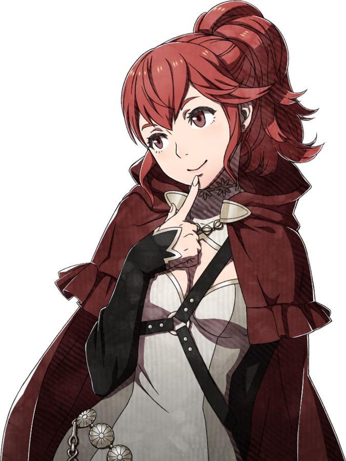

Azura and Dorothea's Jukebox
What Do You Meme
Beautiful Voices
Top 10 Anime Betrayals
What Do We Have In Common?
Crossover Cameos
Before The War
Fire Emblem
Any Last Words?
300
"Reach for my hand, I'll soar away."
"The Edge of Dawn"
300
Thanks to a certain star-adorned thief, this fruit has become a popular meme to use in greetings
Papaya
300
Donnel
Fresh Cut Grass
Phoenix Wright
Sam Riegel
300
A life debt owed to Matthew causes this guy to throw away his brand new perfectly, good job and join Eliwood's army instead
Guy
300
Ignatz
Kagero
Forde
They're all artists
300
This item, which originated in Fire Emblem, can be found as a treasure in the Great Cave Offensive in Kirby Super Star Ultra.
Falchion

300
This natural disaster occurred in Tellius when the goddess was overcome with despair
A flood
300
"I'm the thirteenth Emblem? The Fire Emblem" was uttered by this character when they became the Fire Emblem
Alear
300
"My queen, where are you?! I can’t see… Blood is in my eyes… Your Majesty… I’ll be right… there…"
Geoffrey
600
"Rise from a thousand years ago"
"Emblem Engage!"
600
This is what Fire Emblem fans put on before every Nintendo Direct, in hopes for a Genealogy remake
Clown makeup
600
Thrasir
Pomni
Fish Hat Woman
Lizzie Freeman
600
Betraying his homeland is out of the question for this character, unless a certain princess asks him if he believes in love
Roger
600
Robin
Zeke
Frey
They all had amnesia
600
Lyn wasn't the first character to become horse, as a pony that strongly resembles this character appeared in a My Little Pony comic.
Lucina

600
This war between humans and dragons occurred 1000 years before the events of Binding Blade
The Scouring
600
This Fire Emblem contains a dark and chaotic energy that can only be soothed with an enchanting song
Lehran's Medallion
600
"Ungh... Stupid weapon... doesn't work... Should have... given it... a better name... "
Owain
900
"On an ocean of stars"
"Heritors of Arcadia"
900
A voice actor coined this meme, referencing the distress you should feel towards a hoofed ruminant ungulate
Fear the deer
900
Tuxedo Mask
Johnny Splash
Reinhard
Robbie Daymond
900
This character finds killing a beautiful woman distasteful, and would rather change his allegiance based on a coin flip
Joshua
900
Haar
Niles
Malice
They all wear eyepatches
900
In this Disney cartoon, the attire of Edelgard and Link were worn by false friends inside of a dreamscape.
Amphibia

900
This disaster, instigated as part of a coup against King Lima IV, is what caused the separation between Anthiese and Conrad
Arson / a house fire
900
Only a few people are known to have ever borne this Fire Emblem, one of whom carries it in their own heart
The Crest of Flames
900
"In the end... it's all the same. May as well have died all those years ago..."
Yunaka
1200
"Only want one future, only want one world."
"Fallen"
1200
Thanks to Fire Emblem Shadows, a Lyn was often memed to come from this popular mobile game about horse girl racing
Uma Musume
1200
Gloink Queen
Mimi Tachikawa
SM-8 Research Leader
Elsie Lovelock
1200
This enemy unit will automatically fall in love with a character different than the one you recruited her with
Tharja
1200
Cordelia
Fiora
Dimitri
They are the sole survivors of massacres
1200
Engage wasn't the first time that Marth was controlled by an antagonist, as he was one of many video game characters controlled by an AI in this anime.
Digimon: Appli Monsters

1200
After slaying a dragon, this peasant's hometown was turned into a new kingdom in which he'd rule as king as his reward
Anri
1200
This item came to be known as the Fire Emblem due to the burning rage of the Demon King's soul imprisoned within
The Stone of Grado
1200
"Ooh! Why me? This is SO annoying!"
Serra
1500
"Yami e to"
If ~ Hitori Omou ~ (Lost In Thoughts All Alone JP version)
1500
To Okke's despair, this character only finally became a meme when Lightning joked Okke wanted to eat his ass out
Oscar
1500
Celica
Tikki
Jade
Mela Lee
1500
These allies turned enemies can become your allies once more during an army's dangerous river crossing
Zihark and Jill
1500
Lucius
Mercedes
Veyle
Characters who open / start orphanages in their endings
1500
Edelgard, Dimitri, and Claude were referenced in this children's series as writing in the background, with Claude's being written upside down.
Bluey

1500
A failed attack on Garreg Mach by Those Who Slither In The Dark left this place a fiery, lava-flooded wasteland
Ailell, the Valley of Torment
1500
The Fire Emblem of Tokyo Mirage Sessions #FE is a ritual that also goes by this other name
The Opera of Light
1500
"Luck be… with you, sire…"
Frey
Winnings: $0
Winnings: $0
Winnings: $0
Final Jeopardy
DAILY DOUBLE
FINAL JEOPARDY
Portrait Art
The Anna of Fire Emblem Fates has this unusual (and likely unintended) characteristic in her portrait art
